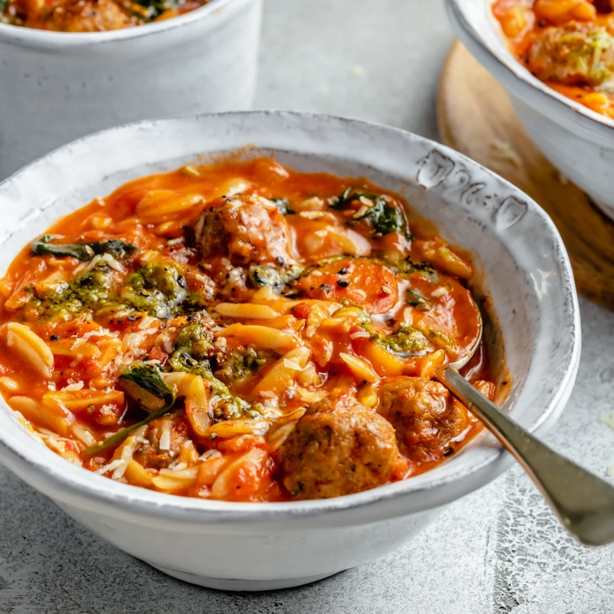

Creamy Tomato Orzo Soup with Mini Turkey Meatballs
Home

Original Recipe
Description
High protein soup for balancing gains and soup season.
Ripped from the internet, approved by Emlyn.
Ingredients
Meatballs
- 1 pound 93% lean ground turkey
- 1/3 cup breadcrumbs
- 1 tsp Italian seasoning
- 1/2 tsp garlic powder
- 1 tsp red pepper flakes
- 2 tbsp basil pesto
- Salt and pepper to taste
- 1 tbsp olive oil, for cooking
Soup
- 1/2 tbsp olive oil
- 3 cloves garlic, minced
- 1 yellow onion, diced
- 1 large carrot, sliced
- 28 oz can crushed tomatoes
- 15 oz can light coconut milk
- 4 cups low sodium chicken broth
- 1 tsp Italian seasoning
- 6 oz uncooked orzo (about 1 cup)
- 1/2 tsp salt
- Freshly ground black pepper
Mix-Ins
Serving
- Fresh shredded parmesan cheese
- Extra basil pesto
Steps
- In a large bowl, use your hands to combine the turkey,
breadcrumbs, italian seasoning, garlic powder, red
pepper flakes, pesto, salt and pepper. Mix together
until well combined and roll into approximately 40-45
1/2 inch mini sized meatballs.
- Place a large skillet over medium high heat and add in
1 tablespoon of olive oil. Add meatballs in batches and
brown on all sides. This will take about 5-6 minutes
per batch. You don't need to cook them all the way
through, as they will finish cooking in the soup. Once
meatballs have browned nicely, transfer them to a large
plate and set aside.
- In a large pot, add in 1/2 tablespoon olive oil and
place over medium heat. Add in garlic, onion and carrot
and saute until onion and carrots slightly soften,
about 3-5 minutes. Next add in crushed tomatoes, coconut
milk, chicken broth, Italian seasoning, orzo, salt and
pepper and stir well. Add in browned meatballs back into
the soup. Bring soup to a boil, then reduce heat and
simmer for 15-20 minutes, stirring occasionally. Finally
stir in spinach and cook for another minute or until
spinach wilts. Taste soup and adjust seasonings as
necessary, adding more salt and pepper if you would
like.
- Serve soup immediately with extra basil pesto swirled
in, parmesan, crackers and/or garlic bread. Serves 6.